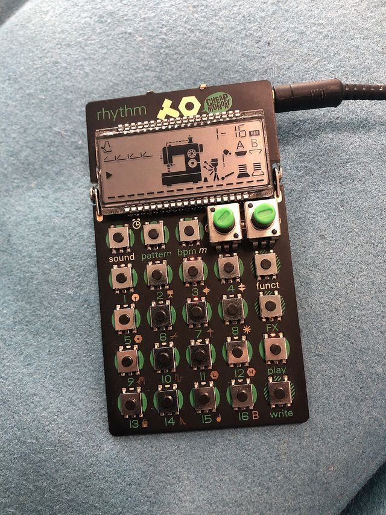

Scheda 079 · 2015 · Stoccolma, Svezia
Teenage Engineering PO-12 rhythm
Fra lui e i suoi fratelli, Teenage Engineering ne vende quasi un milione
Una drum machine svedese grande come una calcolatrice, da tenere in tasca.
Il suono vero · 0:12
Un PO-12 che suona un suo giro di batteria a 80 bpm, 12 secondi che nel reel ricominciano da capo.
0:00 / 0:12
Registrazione di incidentalnoise · CC0 · Freesound · estratto di 12 s, volume normalizzato
- USCITA
- 2015
- PREZZO
- 59 $
- SUONI
- 16
- PILE
- 2 ministilo
La macchinaChe cos'è
Non c'è un guscio. Quello che tenete in mano è il circuito stampato, con 23 tasti, 2 manopole e uno schermo a cristalli liquidi, e dietro le 2 pile ministilo. Un gancetto di filo fa da piedino. Mentre suona, sullo schermo una macchina da cucire lavora a tempo. Ha un altoparlante suo e fa anche da sveglia. La custodia si compra a parte, per chi le saldature a vista non le vuole vedere. A me piace nudo, mi sembra più onesto di una scatola di plastica.
Chi l'ha costruitaTeenage Engineering, Stoccolma
Teenage Engineering nasce a Stoccolma nel 2005. Fra i fondatori c'è Jesper Kouthoofd, che oggi la dirige. Il PO-12 esce a gennaio 2015 con altri 2 fratelli, il PO-14 per il basso e il PO-16 per la melodia, e sopra porta stampato il marchio di Cheap Monday, i jeans svedesi, che lo mettono in vendita con loro. Lo schermo, dice Kouthoofd, viene dai Game & Watch di Nintendo, quei giochini a cristalli liquidi degli anni '80. Si vede subito: i disegni si accendono a pezzi fissi, come una partita a Ball. Dopo il PO-12 ne escono molti altri, fino a Street Fighter e Mega Man.
Come funzionaCosa c'è dentro
Dentro ci sono 16 suoni, dalla cassa a 2 voci intonate, e 16 effetti. Scegliete un suono, premete «write» e accendete i passi sui 16 tasti numerati: il sequencer li suona in giro. Tenendo premuto «write» si registra anche la posizione delle manopole su ogni passo, e gli effetti funzionano allo stesso modo. I pattern sono 16. Se avete 2 Pocket Operator, si sincronizzano fra loro e uno dà il tempo all'altro. Non cercate un battimani normale, CDM nel 2015 notava che non c'è.
Chi l'ha usataNei dischi
- Norlarifà «Shake It Off» di Taylor Swift con PO-12, PO-14 e PO-16, su YouTube nel 2016
- Kenny Beatsfra i musicisti che Teenage Engineering mette nella pagina dei 10 anni dei Pocket Operator
- Zombie Nationanche lui in quella pagina, che però non dice con quale modello
L'aneddotoUna storia
Maggio 2014, Moogfest. A un incontro sul futuro della musica Teenage Engineering presenta una schedina con 23 tasti e un cartellino attaccato, «moogfest special». Dovevano essere regali per il festival, ma la dogana li ferma e ne arriva uno solo, scrivono Synthtopia ed Engadget. I dettagli si sanno dalle foto di uno del pubblico, Robert Pluma. 10 anni dopo Teenage Engineering racconta un'altra versione, con 200 prototipi senza schermo. Quale sia giusta non lo so. Il prezzo annunciato era 49 dollari, e al NAMM di gennaio diventano 59.
Avvertenze
Il circuito è nudo. Tenetelo per i bordi e lontano dalle chiavi in tasca: la custodia si vende a parte.
Il reel
La versione corta
Le cose da sapere in fila, una schermata alla volta, col suono della macchina quando ne esiste una registrazione libera. Aprilo su Instagram ↗
Il carosello
Le 6 tavole
Da dove viene
Fonti
- «Teenage Engineering will put a synth in your pocket for $59» — Engadget, 2015 verificata il 2026-11-04
- «Meet the Teenage Engineering PO-12» — Engadget, 2014 verificata il 2026-11-04
- Teenage Engineering al Moogfest — Synthtopia, 2014 verificata il 2026-11-04
- «Pocket Operators» — Wikipedia (EN) verificata il 2026-11-04
- «Teenage Engineering» — Wikipedia (EN) verificata il 2026-11-04
- «Here’s how TE’s $59 Pocket Operator Rhythm sounds» — CDM, 2015 verificata il 2026-11-04
- 10 anni di Pocket Operator — Wallpaper*, 2025 verificata il 2026-11-04
- Pocket Operator, 10 anni — Teenage Engineering verificata il 2026-11-04
- I Pocket Operator — It's Nice That, 2015 verificata il 2026-11-04
- «Shake It Off» sui Pocket Operator — Bonedo, 2016 verificata il 2026-11-04
Foto: Tim Walker · CC BY 2.0 · Wikimedia Commons
Foto nelle tavole: Tim Walker · CC BY 2.0 · Wikimedia Commons
Foto nelle tavole: Nivinir · CC BY-SA 4.0 · Wikimedia Commons
Suono: Registrazione di incidentalnoise · CC0 · Freesound · estratto di 12 s, volume normalizzato